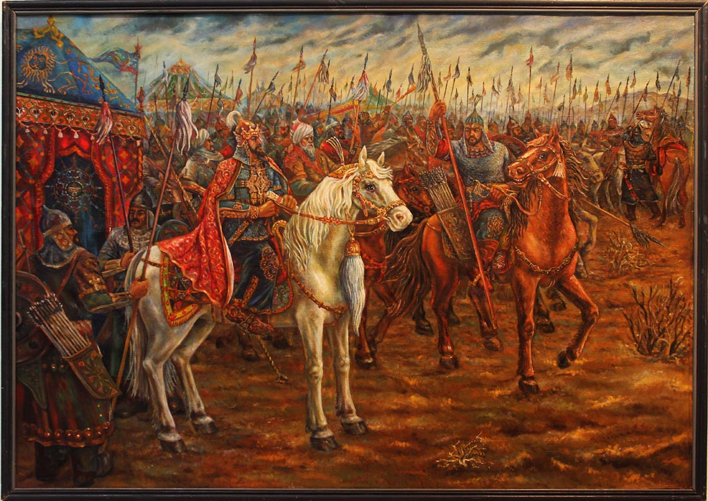

1
Beşiktaş
Beşiktaş , 1903 yılında kurulan Türk spor tarihinin ilk kulübüdür
2

3
4
Beşiktaş , 1903 yılında kurulan Türk spor tarihinin ilk kulübüdür
Beşiktaş , 1903 yılında kurulan Türk spor tarihinin ilk kulübüdür
5
6